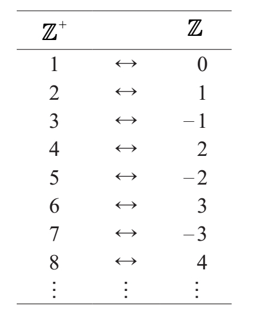
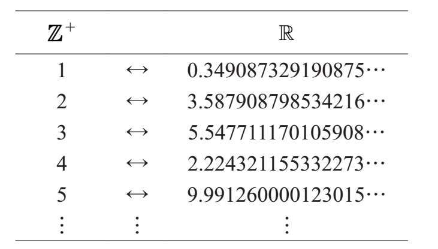
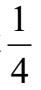
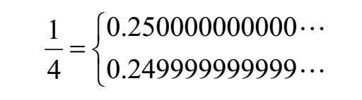
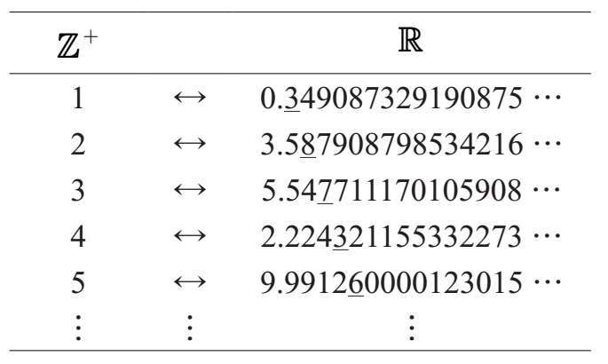
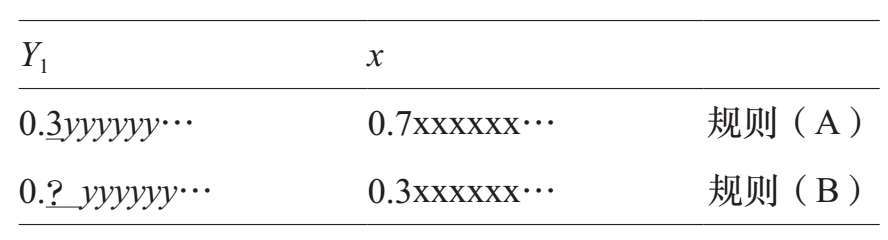
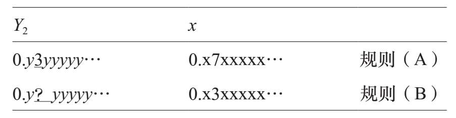
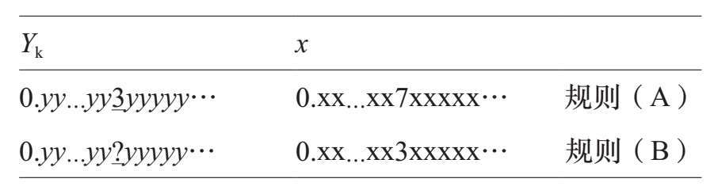
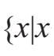
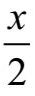

“飞向宇宙……超越无限！”是皮克斯动画公司电影《玩具总动员》中英勇无畏的太空游侠巴斯光年勇敢的战斗口号。巴斯的口号是有趣的，因为它是无稽之谈：怎么可能“超越”无穷呢？什么东西可能大于无穷？！这个问题的荒谬性显而易见，似乎可以阻止数学家提出这种问题，更不用说给予回答了。然而，这正是格奥尔格·康托尔（Georg Cantor）在19世纪末提出的问题。我们对这个问题的首要直觉就是给出“不”的答案：没有什么事物可以“超越无穷”。
但在某种情况下，我们的直觉是错误的。
康托尔的作品在数学和宗教哲学两个方面受到严厉批评。他的作品被广泛接受并被认为具有开创性的时间还不算太长。
在数学中，每个概念都可以用更简单的概念来定义。在严格而有条理的数学发展中，复数用实数定义，实数用有理数定义，有理数用整数定义，等等。数学的高塔基于一个基本概念：集合。
集合（set）就是事物的整体。例如，{1，2，5}是一个包含三个数字的集合，它与集合{2，5，1}相同，因为这与我们列出元素的顺序是不相关的。此外，一个对象要么属于一个集合，要么不属于一个集合；它只能在一个集合中出现一次。因此集合{1，1，2，5}与集合{1，2，5}是相同的，前一个集合中1的重复出现是多余的。
一个集合的标准记法是用大括号将所有成员括起来{…}。
数学家使用符号∈来表示一个集合中的成员资格。例如，符号2∈{1，2，5}意味着：“数字2是集合{1，2，5}中的一个元素。”带斜线的∈意味着对象不是集合中的元素。例如，3∉{1，2，5}。
对于一个集合A，我们用|A|代表集合A中元素的个数。例如|{1，2，5}|=3。我们称|A|为集合A的大小或基数（cardinality）。
诸如{1，2，5}的集合具有有限的大小。然而，Ｚ（所有整数的集合）具有无穷的基数，Ｒ（所有实数的集合）也是如此。
我们如何判断两个集合的大小是否相同？最简单的方法是找出每个集合中元素的数量。例如，{1，2，5}和{3，8，11}的基数都等于3。这两个集合的大小相等。
然而，另一种比较集合大小的方法是找到它们所包含的元素之间的一一对应关系。换句话说，我们不用计算两组元素的个数，而是看看如何将第一组中的每个元素与第二组中的元素进行配对。下面是集合{1，2，5}和{3，8，11}的一一对应关系：
数学家把一对一的对应称为双射（bijections）。
1↔3，2↔8和5↔11。
对于具有明显相同大小的小集合而言，这种办法比较烦琐。
我们来考虑一个更复杂的例子。想象一下，有一个俱乐部有七名成员（为了简单起见，我们将他们命名为：1，2，3，…，7）。
有一年，俱乐部有机会派出三名成员参加全国性的会议。选择三位参与者的方法有很多种，设A是所有可能的三人组的集合：
A={123，124，125，…，567}
A的每个元素代表三个俱乐部成员的选择。例如，“237”表示成员2，3和7前往会议。
第二年，俱乐部的成员得知他们可以派出四名成员参加全国会议。设B为所有四人组的集合：
B={1234，1235，1236，…，4567}
因此A是俱乐部成员所有三人组的集合，而B是所有四人组的集合。
A和B大小相同吗？
如果仔细地写出两套完整的集合，你应该发现A和B有相同的成员数量。写下所有的可能性是枯燥乏味的，且容易出错。
稍后我们会看到集合A和B的大小。关键是，我们不需要通过知道|A|或|B|来确定|A|=|B|。
然而，在这种情况下，通过找到元素之间的一对一对应的关系，就更容易证明A和B具有相同的基数。思路如下：
123↔4567
124↔3567
125↔3467…
356↔1247…
567↔1234
俱乐部成员决定，第一年参加这个会议的人将没有资格参加第二年的会议。第一年没去的四名成员将会参加第二年的会议。我们所看到的是，第一年会议的三人组的选择与参加次年会议的四人组相一致。通过这种方式，我们可以将每一个三人组与一个四人组配对。例如，如果俱乐部成员1，4和5参加了第一次会议，2，3，6，7参加第二次会议。我们表示为145↔2367。
如果我们要写出所有的可能性，这些列表看起来就像在左边显示的那样。A和B成员之间的这种一对一的对应关系表明这两个集合具有相同的大小。
你可以尝试完整地写出两个集合，然后统计每个集合中元素的个数（但是一对一的对应免去了单调乏味）。答案见[z1]。
总之，我们有两种方法来证明一对有限（finite）集具有相同的大小：我们可以确切地计算每个集合里元素的个数，或者我们可以找到它们的元素之间的一一对应关系。但是，如果集合包含无限多的元素，则第一种方法不适用于：没有数——没有整数——是Ｒ（实数集合）的基数。为了表明两个无穷集具有相同的大小，我们必须在它们的元素之间找出一一对应的关系。举例说明如下。
回想一下，Ｚ代表整数的集合：
Ｚ={｛……--3,， --2，2,--1,，0,01,，2,13，,…2}，3，…｝
我们用符号Ｚ+来表示正整数的集合：
Ｚ+={｛11,，2,32,，4,.3..，}4，…｝
Ｚ和Ｚ+大小相同吗？
鉴于我们在本章开头提出的疑问，可能会想到Ｚ为Ｚ+的两倍，因此Ｚ是“无穷的两倍”。但是，这些集具有相同的大小。我们怎么知道？我们用一对一的对应表示。
我们做两个列表。第一个列表只包含正整数，第二个列表包含所有整数（但不按照其通常的顺序）。通过将第一个列表中的数字与第二个中的数字进行配对，我们可以看出联系。如下面图表所示。

该图表显示了Ｚ+和Ｚ之间的一一对应关系。
这里为你准备了两道题。这个图表的第100行看起来像这样：100↔???。右边是什么数字？之后在图表中我们会发现？？？↔100和？？？↔–100。这些行左边的数字是什么？答案见[1]。
结论是Ｚ和Ｚ+大小相同。这也许并不奇怪，因为两者都是无穷的。
通过一对一的对应关系，我们发现Ｚ+和Ｚ具有相同的大小，它们是“同样无穷的”。我们准备了一个更有趣的问题：Ｚ+和Ｒ大小相同吗？诚然，两者都是无穷的，但要证明它们“同样的无穷”，我们需要找到它们的元素之间的一一对应关系。但是，我们将会证明，这种对应是不可能的。
为了演示一对一的对应关系（比如在Ｚ+和Ｚ之间），我们展示如何将第一个集合中的每个元素与第二个集合中的元素进行配对（并确保一个集合中的所有元素都与另一个集合中的不同的元素配对）。但是我们如何证明Ｚ+和Ｒ之间不存在这种对应关系？我们将证明，任何构建Ｚ+和Ｒ中配对元素的图表都是注定要失败的，因为它漏掉了Ｒ的某个成员。论证过程如下：
想象一下，我们已经写下了Ｚ+和Ｒ之间的一一对应关系。这意味着我们创建了一个如下所示的图表：

每个正整数都出现在左列且（据称）每个实数都出现在右边。我们现在要证明，无论我们如何填写右列，都有一个我们忽略的实数。
但是，首先，我们需要停下来解决一些小技术上的麻烦。一些实数可以以两种不同的方式用十进制记数法表示，比如数字

。一方面，我们可以把它写成0.25；另一方面，它也等于0.24999999…，其中数字9永远延续下去。这两个都是用十进制正确表示的方法。最简单的0.25也可以写成以无穷多的0结尾的形式：在最初读本章中可以跳过这一段。我们只是为了使论点完整且清晰而明确技术细节。

假设在图表中，只要可以选择表示的方法，我们便选择一个更简单的以一连串0结束的表示。这个选择并不重要，我们只是想确定我们已经清楚了解如何在右列中填写实数。
现在回到证明过程。想象一下，我们已经创建了一个显示所谓的一一对应关系的图表。现在我们要找到图表右列中缺少的实数。
我们先给第一行小数点后面的第一位数字加下划线，然后给第二行中小数点后面的第二位数字加下划线，再给第三行中小数点后面的第三位数字加下划线，以此类推。我们得到：

带下划线的数字序列是3，8，7，3，6，…我们使用这个数字序列来建立一个实数。
我们从零和小数点0.___开始，然后按照下面的两个规则依次使用带下划线的数字序列来填充小数点右边的位置：
（A）如果带下划线的数字是3，则在数字后面加上一个7。
（B）如果带下划线的数字不是3，则在数字后面加上一个3。
让我们为无限序列3，8，7，3，6，…算出结果。
我们从0.___开始。
第一个带下划线的数字是3，所以适用规则（A）。这告诉我们在小数点后面放一个7；我们现在有0.7___。
第二个带下划线的数字是8，所以规则（B）适用。我们在末尾放一个3；我们现在有0.73___。
接下来是7，规则（B）再次适用。我们再放上另一个3:0.733___。
第四个下划线的数字又是一个3，所以按照规则（A）在末尾加一个7:0.7337___。
序列中的第五个数字是6；按照规则（B）我们添加一个3得到0.73373___。
我们继续逐一编写序列，附加3或7（取决于序列中当前带下划线的数字）以创建一个我们命名为x的数字。依据我们例子中的序列，x=0.73373…，其余数字通过应用规则（A）和（B）进行填充。
这一过程概括如下：
带下划线的数字序列是： 3 8 7 3 6 …
↓ ↓ ↓ ↓ ↓
0. 之后的数字是： 7 3 3 7 3 …
依据的规则： A B B A B …
我们通过这个过程产生的数字x取决于图表。不同的图表会建立一个不同的x。我们要求的是，无论图表是什么，实数x都不出现在右列，因此图表不能显示Ｚ+和Ｚ之间具有有效的一一对应关系。
从顶部开始，我们断言x不是图表第一行的实数。原因如下：假设第一行是1↔Y1。Y1中小数点后的第一位是多少？如果是3，则x的相应数字是7。但是如果Y1中小数点后面的第一个数字不是3，那么x中的相应数字就是3。情况如下：

其中？是除3之外的任何数字。我们看到的是x和Y1是不同的；不论出现在Y1的小数点后面的数字是什么，x中所对应的数字都是不同的数字。因为x和Y1在小数点后第一位就有区别，所以它们是不同的数字。所以x不是图表第一行的实数。
x出现在第二行吗？我们将第二行右边的实数称为Y2，即2↔Y2。在这种情况下，我们检查Y2和x每个小数点后面的第二个数字。如果是Y2中的3，那么它就是7。如果不是Y2中的3，那么它是x中的3。情况如下：

像之前一样，？是除3之外的任何数字。我们看到的是Y2和x是不同的数字，因为小数点后的第二个数字也是不同的。因此x不在图表的第二行。
到目前为止，我们已经表明，x既不在图表的第一行也不在第二行。但是如果图表代表Ｚ+和Ｚ之间的一一对应关系，则x必须在第二列的某处。换句话说，对于某个正整数k，x出现在图表的第k行；也就是说，我们可以在图表中找到这一行：k↔Yk=x。但是现在我们遇到了和以前完全相同的问题。x和Yk的第k个十进制数字是什么？如果Yk中的那个数字是3，那么x中相应的数字是7。但是如果Yk中的数字不是3，那么x中与之对应的数字是3。最后一次：

其中？是除了3之外的任何数字。由于x和Yk的第k个数字不同，所以这些是不同的数字。
我们的论点表明，实数x不会出现在这个图表的右列的任何地方。我们可以尝试通过制作新的图表来解决这个问题，也许在开始时插入x。但是，按照适用于这个新的图表的规则（A）和（B）的程序，我们保证会找到新图表所漏掉的另一个不同的数字x'。
结论是每张图都有缺陷！Ｚ+和Ｚ之间不可能形成一一对应的关系。
我们已经表明Ｚ+和Ｚ大小相同。它们不仅都是无穷的，而且我们可以发现它们的元素之间存在一一对应关系。集合Ｚ+和Ｚ具有相同（无穷）的大小。
但是，即使Ｚ+和Ｚ都是无穷的，也不能找到这样的对应关系。由于每个正整数也是一个实数，集合Ｚ显然比Ｚ+“大”。没有足够的正整数能与实数来进行一对一的配对。
每个正整数也是实数的说法也可以这样表达：Ｚ+是Ｒ的一个子集。
有限集的大小可以用一个数字来描述。集合A={1，3，7，9}的大小为四：|A|=4。我们如何描述无限集的大小？在康托尔的工作之前，可爱的∞符号或许能满足我们。我们可能会想写|Ｚ+|=∞和|Ｚ|=∞，然后错误地做出|Ｚ+|=|Ｚ|的结论。∞符号没有提供足够的细微差别来区分Ｚ+的大小和Ｚ的大小。
为了弥补这一点，康托尔开发了一个全新的超越有限的数字体系。这些新的数字被称为“超限数”，用来体现无限集合的大小。
事实证明，Ｚ+是一个“最小”的无限集合。这是什么意思？假设X是无限集合。Ｚ+和X之间可能存在也可能不存在一对一的对应关系，但是数学家们已经证明，Ｚ+和X的某个部分之间总是存在一一对应关系。换句话说，Ｚ+和X或大小相同，或X的某个部分（但不是全部）具有与Ｚ+相同的大小。
与Ｚ+具有相同大小的集合称为可数无穷（countably infinite）。它们是最小的无穷集合。康托尔用符号ℵ0代表Ｚ+的大小。在符号中，|Ｚ+|=ℵ0。因为Ｚ和Ｚ+之间存在一一对应关系，我们也可以写成|Ｚ|=ℵ0。但是，由于Ｚ比Ｚ+更无穷，|Ｚ|＞ℵ0的写法是正确的。因为ℵ0代表无穷集合的大小，所以不是一个整数。相反，它被称为超限数，ℵ0是最小的超限数。
符号ℵ是希伯来字母的第一个字母：aleph。符号ℵ0通常读为aleph null或aleph naught。
要报告更大的无穷集合的大小，就有浩瀚无际的超限数字。比ℵ0大的集合是不可数的，而数学家已经表明，ℵ0的上一层有一个清晰的“无穷级”。也就是说，我们可以显示有一个集合X，它首先具有属性（a）：|X|＞ℵ0。但也有属性（b）：没有大小介于|X|和ℵ0之间的集合。这个大小的集合被认为具有基数ℵ1。在符号中，ℵ0＜ℵ1，但ℵ0和ℵ1之间不存在超限数。
事实上，有一个完整的超限数的阶梯，ℵ0＜ℵ1＜ℵ2＜ℵ3＜···。这个层级体系扩展到大于任何ℵk（其中k是一个整数）的超限数。大于ℵk（对于所有整数k）的最小超限数称为ℵω，除此之外，还有无限多的超限数！
在这个体系中实数集Ｚ在哪里？我们已经确定了|Ｚ|＞ℵ0。但是我们可以精确地确定Ｚ的大小吗？到底有多少个实数？
想象一下，你进入了一个美丽的建筑。一个宏伟的入口通往大理石楼梯，将你带到指定的美妙的客房。但是，如果你找到地下室的门，并向下走，景象迅速改变。在那里，你会发现管道和布线，刺眼的照明和没铺好的地板，也许还有一些虫子在爬。地下室是一个恐怖的地方，但它是其余结构的基础。
对于我们称之为数学的建筑来说，这是一个合理的比喻。正如我们在本章开头描述的，数学中的每个概念（从整数到圆）都是用简单的概念来定义的。在某种程度上，这个过程必然会“触底”，我们会得出数学中最基本的一个概念，它是其他概念之源。这个概念就是集合。
我们用集合描述事物的整体，但是我们既没有定义整体（它似乎只是另一种说“集合”的方式），也没有为集合中可以归入的事物类型费神（因为“事物”没有数学上的定义）。我们如何摆脱这个困境？
起初，数学家在处理这种情况方面有点随心所欲。我们假定有些事物叫集合，存在一个叫作“是……的一个元素”的关系，其符号是∈，我们可以从那里继续。这让我们陷入了一些麻烦。
康托尔和其他人所使用的这种方法被称为朴素集合论（naive set theory）。
一个集合能成为另一个集合的成员吗？当然！例如，集合{1，2}是下面这个集合的一个元素：
{0，{1，2}，3，6，7}。
这个集合有五个成员：数字0，3，6和7以及集合{1，2}。
我们设想的“第一个集合”是空集（empty set）。这是一个没有成员的集合，我们用符号∅代表它。空集的基数（大小）为0，任何“x∈∅”的陈述都是假的（因为∅没有成员）。
然后我们想：我们可以根据成员的属性来定义集合。例如，偶数集合可以这样描述：

是一个整数，
也是一个整数}一般来说，符号｛x|x的属性｝表示满足所列属性的所有元素的集合。这让我们陷入了一堆麻烦。
在20世纪初，哲学家和数学家伯特兰·罗素（Bertrand Russell）对这个集合进行了思考：
A={x|x是一个集合，且x∉x}
罗素的成就之一是1950年获得诺贝尔文学奖。
这是由那些不属于自身的集合组成的集合。例如，空集满足这个性质：∅∉∅。因为∅不包含任何元素。集合x在A中的标准很简单：它不能是它自己的成员。由∅∉∅我们得出∅∈A。
然后罗素提出了这一致命的问题：A∈A吗？
●如果答案是“是”，那么A∈A。为了令A∈A，一定是A满足所限定的属性：A不包含于A。用符号表示为，A∉A。
●如果答案是“否”，那么A∉A。但是A满足A所限定的属性，这意味着A包含于A。用符号表示为，A∈A。
如果我们认为A∈A，我们必定得出A∉A。如果A∉A，那么我们必定得出A∈A。A不可能既是成员又不是成员！非常严重的问题出现了。
这个矛盾被称为罗素悖论（Russell’s antinomy）。
这个悖论的含义之一是集合A是不存在的。没有这样的集合。
这个新方法成功定义了集合，被称为公理集合论（axiomatic set theory）。这套规则描述了集合如何表现以及如何形成集合，被普遍接受，它以规则的创造者恩斯特·策梅洛（Ernst Zermelo）和亚伯拉罕·弗兰克尔（Abraham Fraenkel）命名：被称为ZF公理。
在罗素对这一问题所做研究之后的几年里，一套新的集合论方法得到发展。一组明确的、无歧义的（更准确地说，是在技术上）规则被提出，它包括集合的表现以及形成的方式。集合和∈的定义隐含在这个方法中。我们并没有真正说出它们是什么，只是描述它们拥有的属性。那么我们简单地假设存在具有由规则列表描述的属性，并从这里着手我们的研究。新的规则阻止了罗素悖论朝着畸形方向发展，克服了进一步的悖论。
我们回到最初的问题：有多少个实数？我们知道正整数的数量是ℵ0。而且我们知道|Ｒ|＞ℵ0。但是|Ｒ|=ℵ1吗？这意味着没有集合符合介于Ｚ+和Ｚ之间的大小，康托尔相信|Ｚ|=ℵ1，但不能证明这一点。他把这个猜想称为连续统假设（continuum hypothesis）。这个问题引起了极大的关注。1900年，德国数学家大卫·希尔伯特（David Hilbert）列出了他所认为的“20世纪最重要的23个数学问题”。连续统假设的证明（或者反证）位列第一。
希尔伯特的第一个问题已经解决了，但不是以他所期望的方式。简短但完整的答案是：“依情况而定。”
呃。数学最宝贵的方面是它的问题（通常是！）有一个明确的答案。对连续统假设的“可能是/可能不是”的似是而非的答案似乎在推翻这种确定性。答案怎么能如此模棱两可呢？
库尔特·哥德尔（Kurt Gödel）在20世纪40年代和保罗·科恩（Paul Cohen）在20世纪60年代的研究表明，公理集合论的标准规则并不足以回答这个问题。更具体地说，他们表明，无法证明或反驳存在一个大小严格介于Ｚ+和Ｚ之间的集合。下面是另一种思考方式：可以有把握地假设|Ｚ|=ℵ1或|Ｚ|＞ℵ1。我们只是拥有两种不同的数学系统，两者都是正确的——只是互有差别。
这里是之前描述的集合A和B中元素的完整列表：我们可以用数字1到7创建的三人组和四人组。每个集合中有35个元素，我们在这里使用之前描述的一对一的对应关系：
123 ↔ 4567 124 ↔ 3567 125 ↔ 3467 126 ↔ 3457 127 ↔ 3456
134 ↔ 2567 135 ↔ 2467 136 ↔ 2457 137 ↔ 2456 145 ↔ 2367
146 ↔ 2357 147 ↔ 2356 156 ↔ 2347 157 ↔ 2346 167 ↔ 2345
234 ↔ 1567 235 ↔ 1467 236 ↔ 1457 237 ↔ 1456 245 ↔ 1367
246 ↔ 1357 247 ↔ 1356 256 ↔ 1347 257 ↔ 1346 267 ↔ 1345
345 ↔ 1267 346 ↔ 1257 347 ↔ 1256 356 ↔ 1247 357 ↔ 1246
367 ↔ 1245 456 ↔ 1237 457 ↔ 1236 467 ↔ 1235 567 ↔ 1234